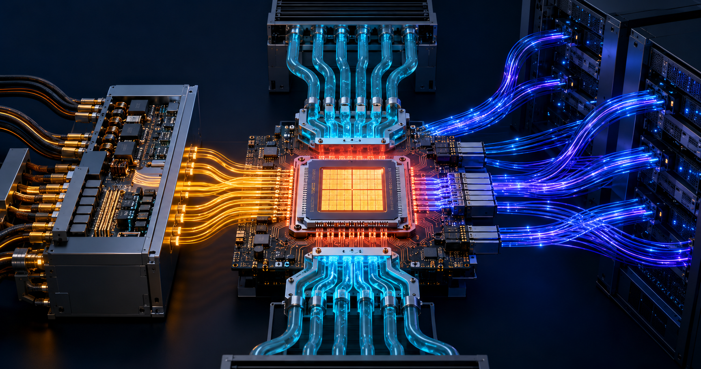

← Back to Research & Perspectives
AI infrastructure · Investment thesis
The Physical Bottlenecks of AI Infrastructure
Power in. Data through. Heat out. The next phase of AI will be shaped not only by better chips, but by the physical systems that allow those chips to work at scale.

AI-linked stocks have just gone through another sharp market reset. When expectations move faster than deployment, valuation corrections are inevitable. But the selloff raises a more useful question than whether the AI trade is “over”: as capital becomes more selective, which parts of the infrastructure remain physically unavoidable?
Stock markets price expectations. Infrastructure obeys physics. Every AI data center must bring enormous amounts of power to densely packed processors, move data between them at ever-higher bandwidth, and remove the heat that computation creates. Model demand can fluctuate; these three requirements do not disappear.
The thesis: the durable value in AI infrastructure will increasingly accrue to companies that relieve one of three coupled constraints—power delivery, optical connectivity, or thermal management—at a point where qualification, integration, and switching costs create defensible control.
One system, three physical flows
It is tempting to analyze AI hardware as a contest among accelerators. In practice, the accelerator is only one part of a tightly coupled system. Useful compute depends on three flows working together:
1. Power in
Convert and deliver electricity efficiently, from the grid and rack down to the package and die.
2. Data through
Move information across memory, packages, racks, and clusters without an unsustainable energy penalty.
3. Heat out
Move heat from silicon through interfaces and cooling loops to the outside environment.
Improving only one flow often intensifies pressure on the other two. More compute increases both power density and heat flux. Faster electrical links consume more energy and generate more heat. Advanced packaging shortens signal paths but creates new thermal and mechanical challenges. The relevant unit of analysis is therefore the whole system—not a component in isolation.
1. Power delivery becomes system architecture
The AI power problem is not simply that data centers need more electricity. Power must be converted several times and delivered to processors operating at low voltage and extraordinary current. At each stage, conversion losses become heat; resistive losses rise rapidly with current; and transient workloads demand fast, stable response.
This shifts value toward higher-voltage distribution, more efficient conversion, wide-bandgap power devices, integrated power stages, better magnetics, and architectures that place regulation closer to the load. The best solution is not automatically the device with the highest laboratory efficiency. It is the one that improves rack-level power density, reliability, serviceability, and total cost while surviving a demanding qualification cycle.
Watch for: fewer conversion steps, higher distribution voltage, vertical power delivery, advanced GaN and SiC devices, and power products designed jointly with compute and cooling architectures.
2. Optics moves closer to compute
AI clusters are giant communication machines. Their performance depends not only on the speed of each accelerator, but on how efficiently thousands of accelerators exchange data. As link speed and distance increase, conventional electrical interconnects require more equalization, retiming, and power. Eventually, the energy cost and signal-integrity burden become architectural constraints.
That is why optics is moving progressively closer to the switch and compute package—from pluggable modules toward co-packaged optics and, over time, optical I/O. The opportunity spans lasers, silicon photonics, modulators, packaging, fiber attach, test, thermal control, and orchestration software. Yet proximity creates new problems: a failed optical engine cannot be allowed to strand a valuable compute package, and lasers, electronics, and advanced packaging have very different reliability profiles.
Watch for: credible manufacturing yield, field-replaceable architectures, laser strategy, automated optical packaging, interoperability, and measured energy per transmitted bit at the system boundary.
3. The thermal bottleneck is concentrated at interfaces
Cooling discussions often focus on liquid loops, cold plates, or immersion tanks. Those systems matter, but heat must first cross a sequence of microscopic boundaries: transistor to die, die to thermal interface material, interface to heat spreader or cold plate, and then into the coolant. A weakness at any interface can limit the entire cooling chain.
Advanced packages make this harder. Chiplets, stacked memory, interposers, and three-dimensional integration create non-uniform hot spots and materials with different coefficients of thermal expansion. Those mismatches can cause warpage, fatigue, cracking, or delamination over repeated thermal cycles. The winning thermal solution must therefore manage heat and mechanical stress at the same time, while remaining manufacturable and serviceable.
Watch for: interface resistance rather than bulk conductivity alone, pump-out and dry-out under cycling, package-level mechanical reliability, metrology, and compatibility with high-volume assembly.
The bottlenecks are coupled
These transitions cannot be assessed independently. Moving optics closer to compute may reduce link energy, but it adds heat-sensitive photonics beside hot electronics. Delivering power from the back side of a die can free routing resources, but it changes fabrication, packaging, and thermal paths. Denser three-dimensional integration shortens interconnects, but concentrates heat and amplifies stress from material mismatch.
This coupling is precisely where durable businesses can emerge. A component that looks interchangeable on a specification sheet may become highly defensible once it is co-designed into a package, validated across thousands of thermal cycles, qualified by a hyperscaler, and supported by proprietary process control.
Where new companies can create value
The most attractive opportunities may not be the largest categories in a top-down market forecast. They are often narrow control points where a small improvement unlocks a much more valuable system:
- Critical materials: thermal interfaces, substrates, dielectrics, bonding materials, and optical materials that enable new architectures.
- Specialized components: power modules, optical engines, connectors, pumps, cold plates, sensors, and embedded control.
- Manufacturing and test: bonding, alignment, inspection, reliability characterization, and yield-learning tools.
- System intelligence: software and controls that jointly optimize workload placement, power delivery, optical fabric, and cooling.
A startup does not need to own the entire data-center stack. It needs to own an indispensable performance or manufacturing constraint—and prove that the value created for the system is much larger than the cost of its product.
Five questions for an investible bottleneck
- Is the constraint unavoidable? Does scaling compute make the problem more severe, or can the system route around it?
- Is the improvement material at system level? A component metric matters only if it changes power density, bandwidth, uptime, yield, or total cost.
- Where is the control point? Look for scarce process know-how, qualification data, intellectual property, supply assurance, or deep integration into customer designs.
- Can it be manufactured reliably? Yield, repeatability, test time, repairability, and supply-chain readiness often matter more than a record laboratory result.
- Who captures the value? Confirm that the supplier can retain economic value rather than giving all of the benefit to a dominant platform customer.
The investment implication
A market correction can be healthy for deep-tech investing because it separates exposure to a popular narrative from ownership of a necessary capability. The task is not to predict every accelerator winner. It is to identify the enabling technologies that multiple architectures will need, then distinguish genuine control points from components that will be standardized and commoditized.
Power, optics, and thermal management will not advance in neat, independent markets. They will co-evolve around package and rack architectures. Research and diligence should follow those interfaces: where energy is lost, where data movement becomes uneconomic, where heat or stress accumulates, and where qualification makes substitution difficult.
Bottom line: AI is software expressed through physical infrastructure. As compute density rises, the companies that help electricity arrive efficiently, information move economically, and heat leave reliably may capture some of the most durable value in the stack.
Sources and related reading
- The Asahi Shimbun: recent market coverage of the AI-stock selloff
- Reuters: global chip and AI-linked equity selloff, July 17, 2026
- Oyon Advisory: The Hidden Materials Bottleneck in AI
- Oyon Advisory: From Silicon to Wide-Bandgap and Ultra-Wide-Bandgap Semiconductors
- Oyon Advisory: Semiconductor Industry and AI Investment Boom